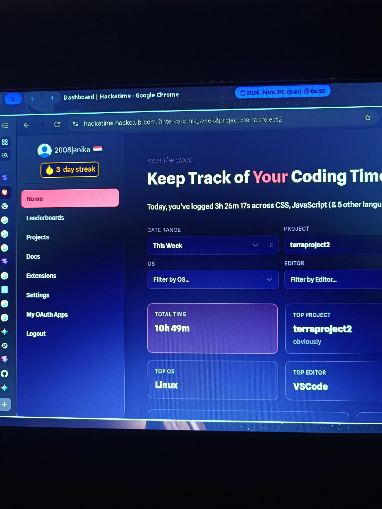
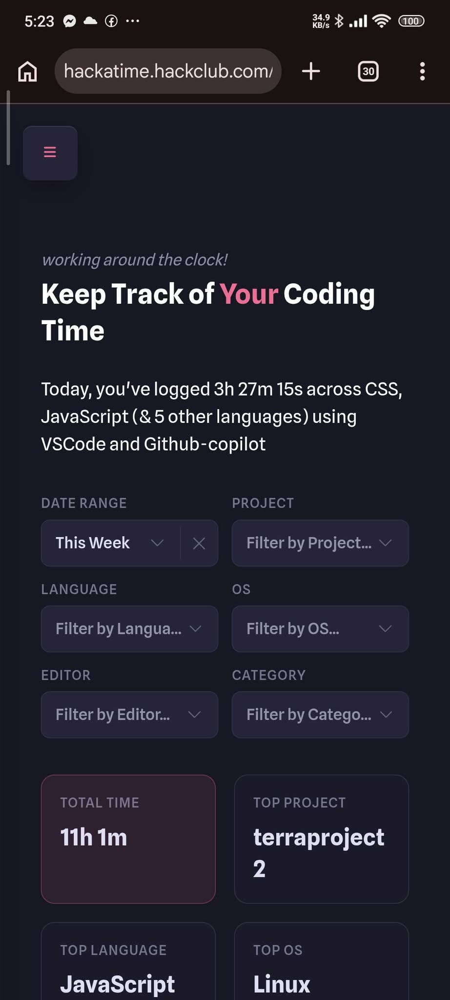
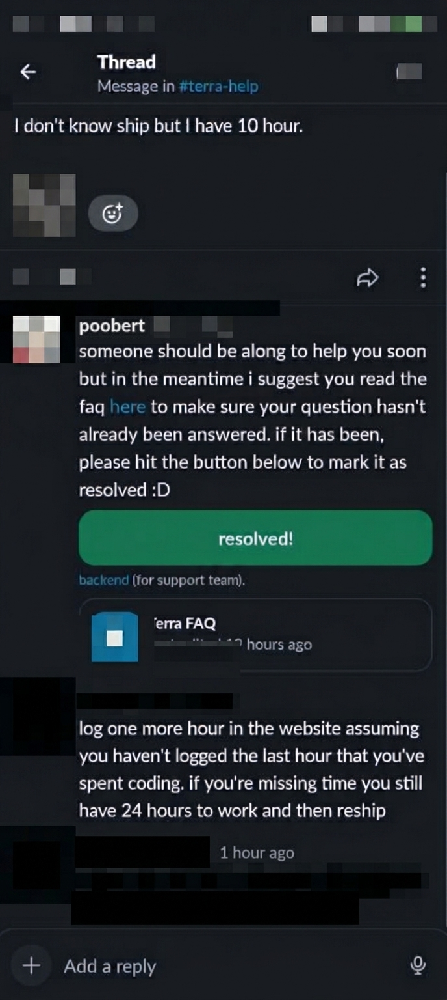
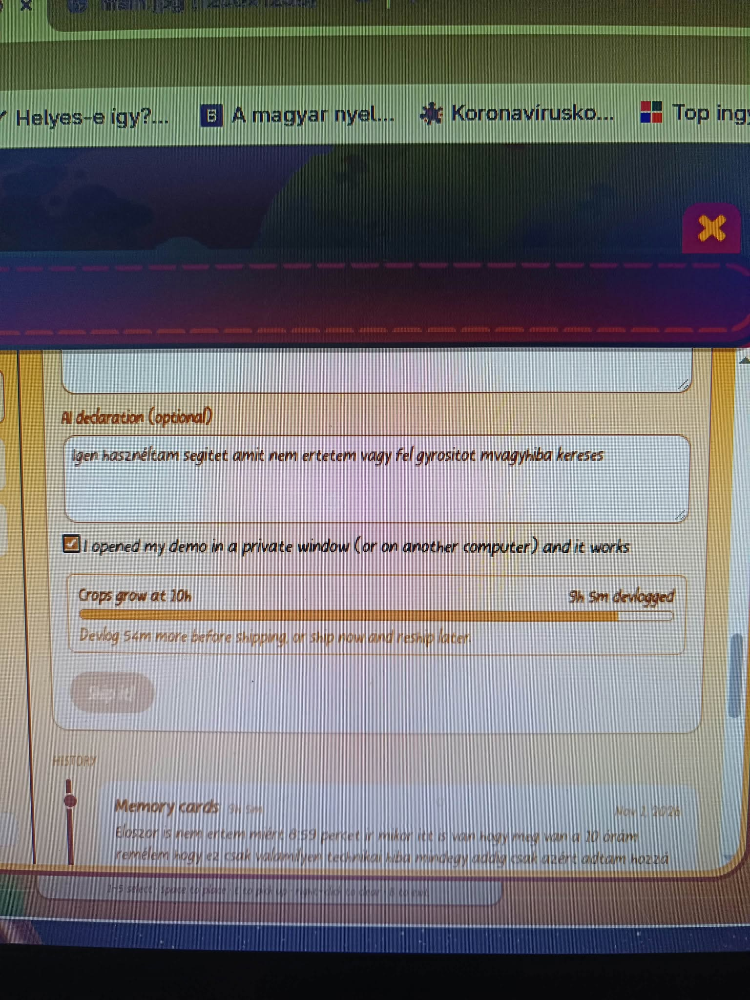
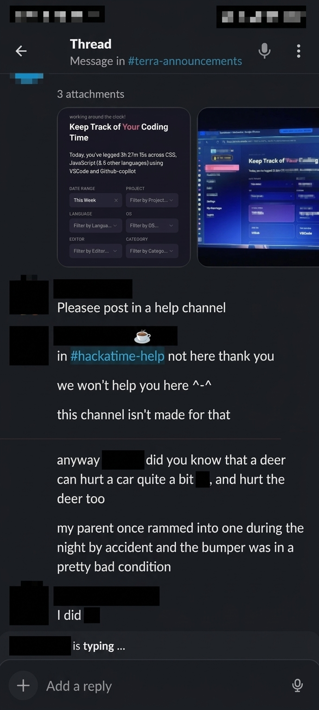
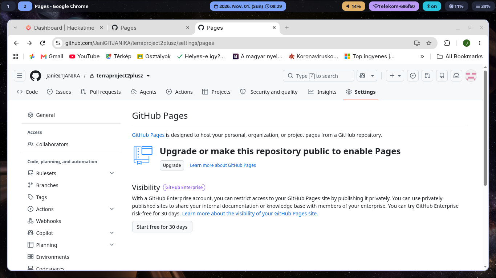

Nem müködik nálam az idő naplózása :(
Sajnos valamiért nem müködik nálam az idő naplozása ezért meg próbáltam minden féle dolgot.


Itt van amit javasoltak
Itt pl azt javasolták hogy tegyek be addig több respositoryt a terraprojct2 a fő ez a kiegészítő és a Tettris az csak véletlenül került bele azt a kódot csak vizsgáltam.

Itt van hogy nem látta az az idöt.
Nem tudom miért ha esetleg tudja megírhatja nekem emailbe hogy leg közelleb velem ne forduljon többet ilyen elő.

Ezek is próbálkozások
Ahogyan néztem és olvastam nem ide kell ezeket a próblémákat írni.

Most a githubse enged.

Köszönöm szépen a figyelmet!
Bocsánat hogy ilyen szomúrura sikeredet ez a weboldal csak meg szeretem írni abban a reményben hátha meg tudja nézni hogy tényleg meg csináltam és nem fogom elveszíteni.
De ezeket azóta megoldtottam.
Segítségek amiket használtam.
Gemini ha elakadtam és az alap rendszer tanulásában egy youtube videót is amit meg csináltam Reactba mert a Youtube videóban nem úgy volt és egyedi elemeket raktam bele.